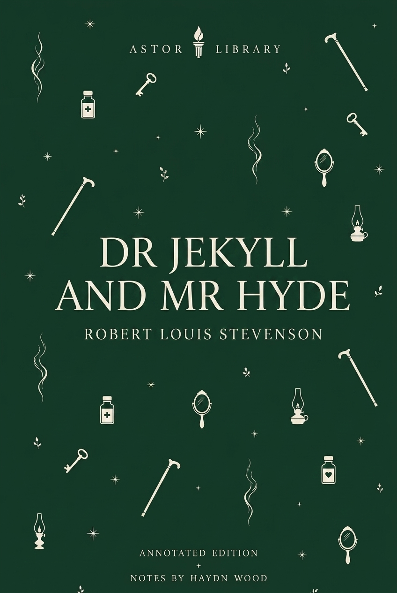
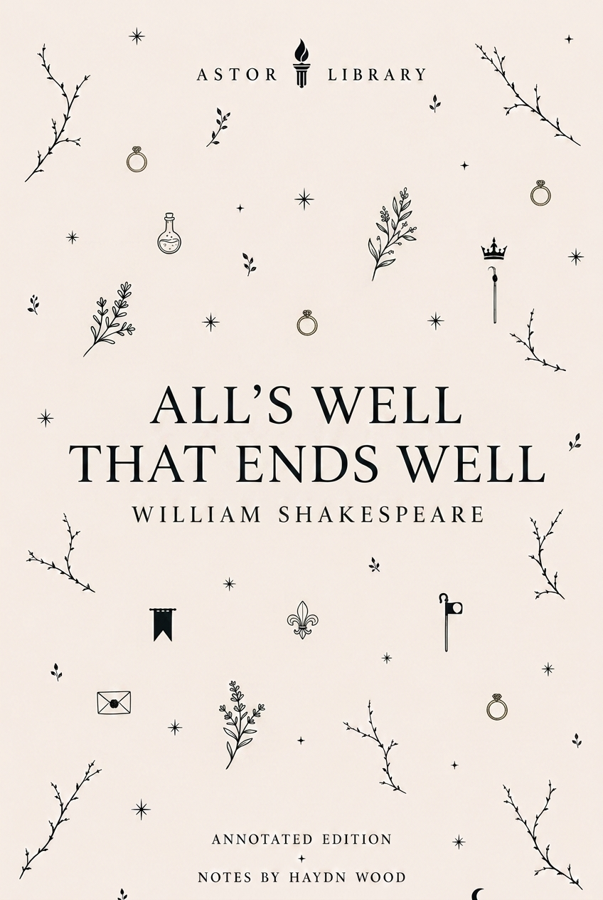
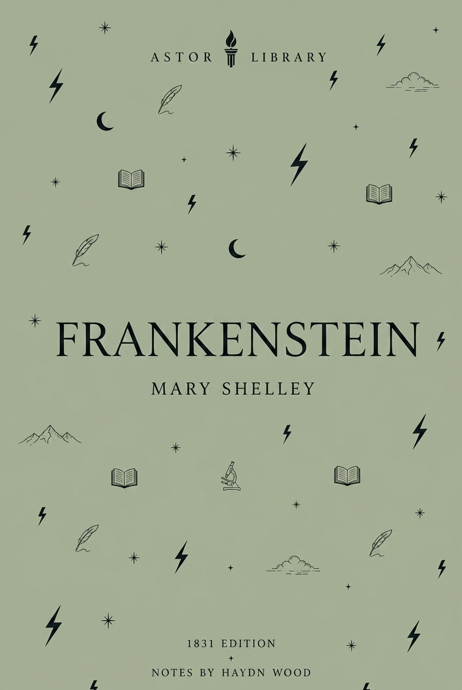
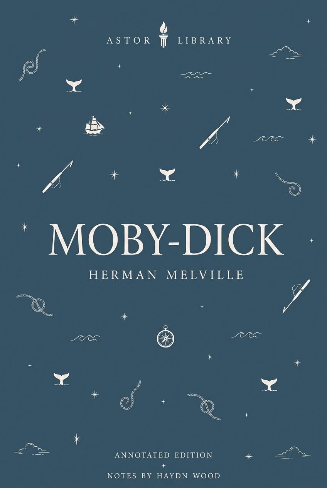
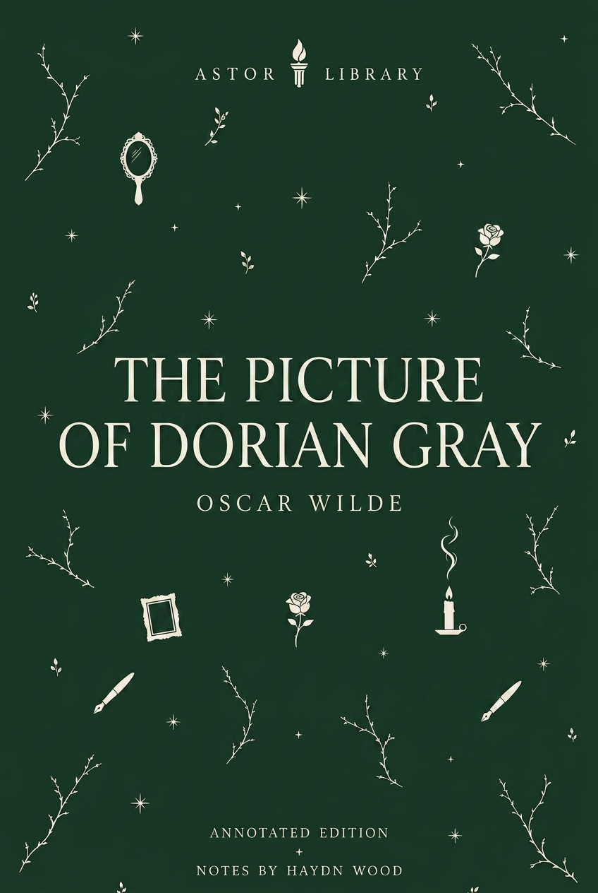
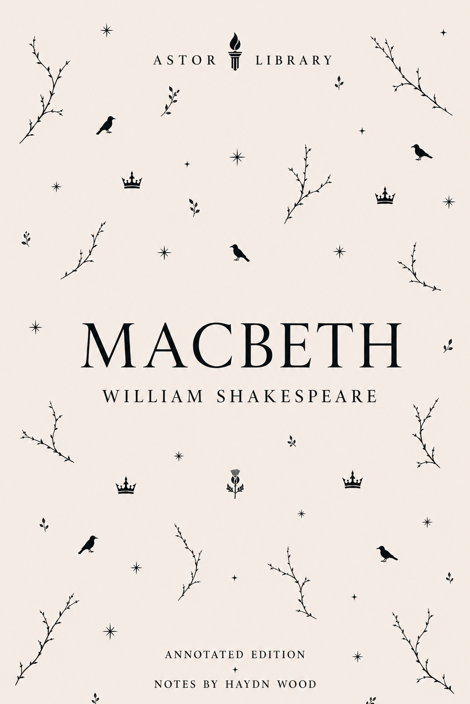

Shakespeare
Hamlet, William Shakespeare
Q1, Q2 and First Folio textual history, Amleth source tradition, revenge tragedy, Elsinore, Ophelia, stage history and screen versions.
 LIBRARY
LIBRARYCatalogue
Current Astor text pages, arranged by author and period.
Shakespeare
Q1, Q2 and First Folio textual history, Amleth source tradition, revenge tragedy, Elsinore, Ophelia, stage history and screen versions.

Shakespeare
Quarto and Folio textual history, Lear’s division of the kingdom, Cordelia, Gloucester and Edgar, source material, Tate’s adaptation, RSC records and screen afterlives.

Shakespeare
First Folio text, Boccaccio and Painter sources, Helena, Bertram, Parolles, rank, merit, darker comedy, bed trick, production records and screen versions.
Modern
Publication history, Russian Revolution context, Stalinism, propaganda, allegory, rewritten commandments, Boxer, Squealer, stage afterlives and screen versions. Due to copyright restrictions, this Astor edition is sold only in Canada and Australia.

Romantic & Regency
Two Astor editions, 1818 and 1831 publication history, Romantic science, galvanism, layered narration, the Creature, stage and screen afterlives.

Restoration & Enlightenment
First publication, epistolary form, servant-master power, virtue, consent, class, Shamela, Anti-Pamela, Highmore paintings and afterlives.

Victorian
Serial publication, first edition, Kent and London, class ambition, crime, Miss Havisham, Magwitch, endings and screen afterlives.

Shakespeare
Early quartos, First Folio record, source material, fairy imagery, stage history, Brook's 1970 RSC production, music and screen versions.

Victorian
Publication history, Victorian London, science, secrecy, narrative method, stage versions, screen afterlives and the divided self.

Victorian
1890 Lippincott's magazine text, 1891 revised book edition, aestheticism, decadence, reception controversy, narrative doubling, portrait symbolism and stage/screen afterlives.
Victorian
Two Astor editions, publication history, vampire folklore, documentary form, Whitby, Victorian technology, medicine, stage afterlives and screen versions.
Renaissance & Early Modern
Early print history, humanist context, dialogue form, property, governance, religion, reception and later afterlives.

Shakespeare
Print history, stage history, opera, screen versions and later responses.
American
Two Astor editions, 1851 British and American publication history, the Essex, Mocha Dick, sperm-whale hunting, maritime labour, key passages, image records, stage afterlives and screen versions.